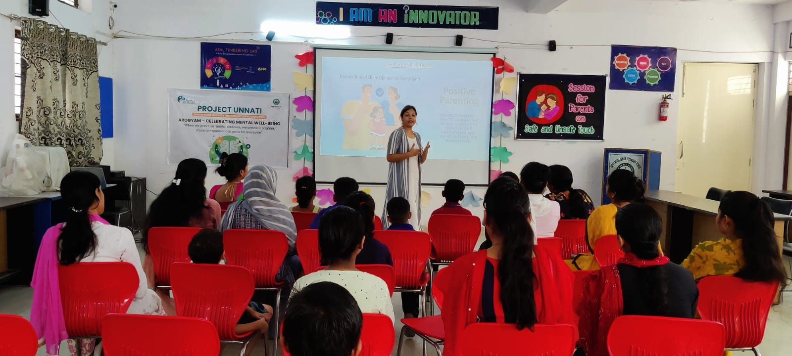
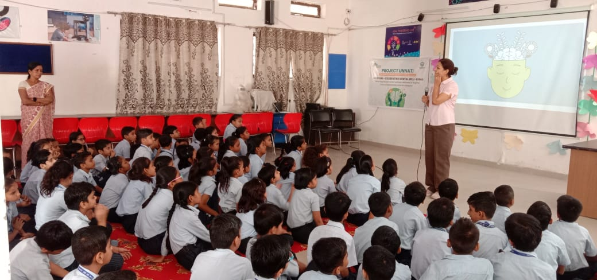
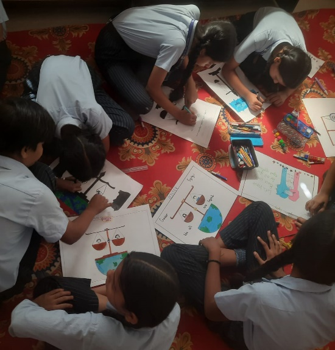
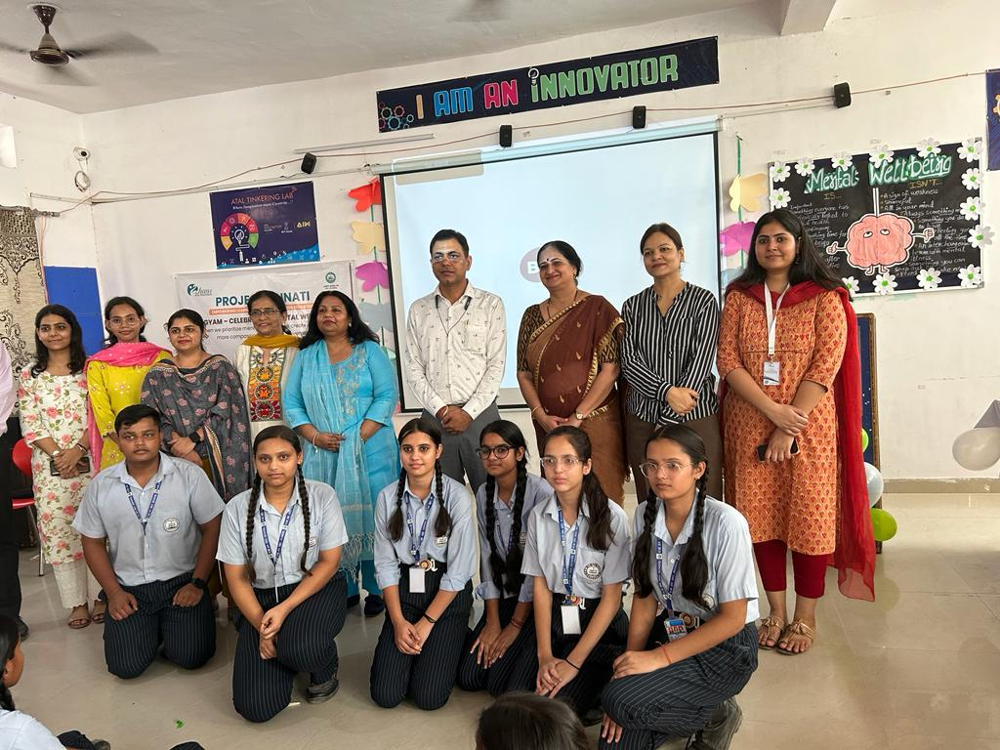
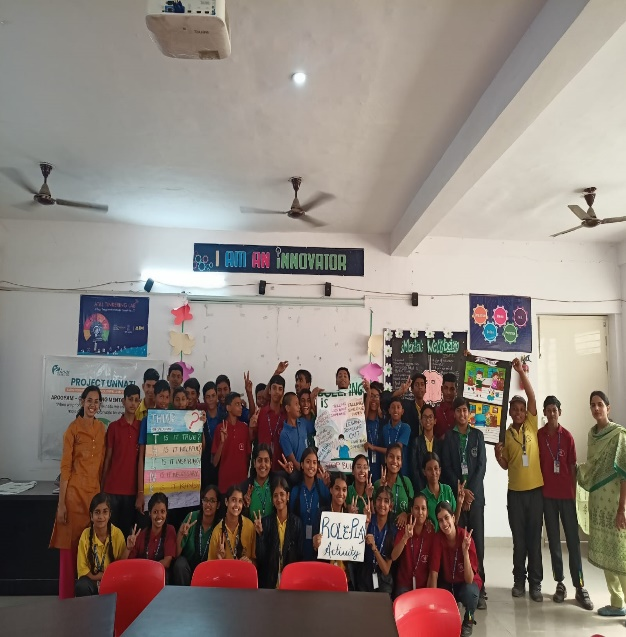

Health and well being
AROGYAM 2023 – Celebrated Mental Health Day by H.M. Sr. Sec. School
AROGYAM 2023, our Mental Health Day celebration, was a holistic event designed to address various
aspects of mental well-being. The event featured six distinct activities, each targeting different classes
and topics.
Activity 1: Stress Management - Breathing Exercise in Morning Assembly (Week 1, Day 5)
Classes - VI to XII
It aimed to alleviate stress, boost focus, and enhance emotional regulation and promote mindfulness
through controlled breathing. These exercises equip students with valuable tools to cope with academic
and personal challenges, ultimately improving their overall well-being and performance.

Activity 2: Parent Sensitization Program (Week 1, Day 7)
This informative session aimed to empower parents with knowledge and tools to keep their children
safe and sensitize. Open communication between parents and the school is vital for addressing sensitive
issues effectively.

Activity 3: Safe and Unsafe Touch Activity (Week 2, Day 9)
Classes - III to V
The activity aimed to create awareness and educate students about safe and unsafe touch, with a
special focus on child safety. This activity involved a discussio3 followed by the screening of the
movie ‘Komal’ to impart this vital knowledge in a child-friendly and engaging manner. Movie screenings
can be a powerful tool for initiating discussions on sensitive topics.

Activity 4: Poster Making on Gender Equity (Week 2, Day 9)
Classes - VI & VII
To encourage students to express their views on gender equity, fostering awareness, discussion, and
advocacy for a more equitable and inclusive society. Art can be a powerful medium for self-expression
and dialogue on social concerns.

Activity 5: Group Discussion on Effect of social media on Mental Well-being (Week 2, Day 10)
Classes - IX to XI
To explore the impact of social media on mental well-being, foster critical thinking and equip
participants with strategies to use social media in ways that support their mental health and
well-being. It helps ton increase awareness of social media's impact, improved digital literacy, and the
development of healthier online habits for enhanced mental well-being.

Activity 6: Role play (Week 3, Day 16)
Class - VIII
The activity aims to engage students in interactive role-play to foster awareness about bullying,
gender role equity and informed and responsible cyber use, encouraging a proactive approach to these
issues. Students develop the effectiveness of role-play as a tool for an active learning, emphasizing
problem-solving and practical skill development, thus enhancing student’s ability to address real-life
situations
